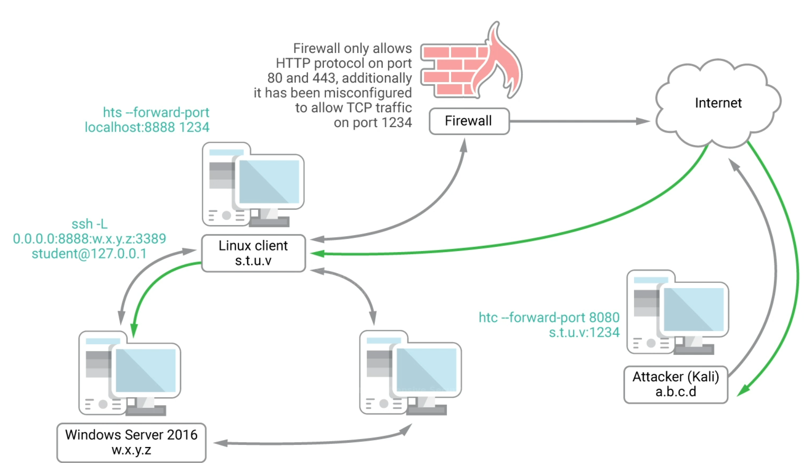

05- HTTP tunneling through deep packet inspection
Context
- linux client is loetning on 1234

- Goal rdesktop to windows server from kali through linux client tunnel via only HTTP protocol
- encapsulates traffic within HTTP requests
Practical
(client and server)